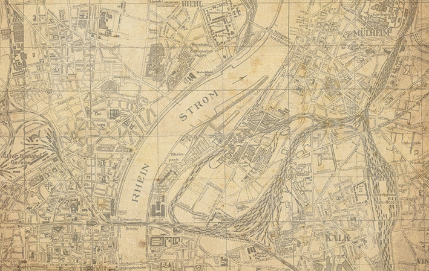

"Frei das Land", Nr.1 (1928) S.1. (Bildmontage)
"Frei das Land", Nr.1 (1928) S.1. (Bildmontage)
Die Darstellung der gesammelten Informationen mit modernen Mitteln bietet einen intuitiven Zugang, wodurch die wissenschaftliche Arbeit einem breiteren Publikum zugänglich gemacht wird. Nicht zuletzt möchten wir natürlich an die Menschen, deren Ideen erinnern und damit zu kritischen Gedanken anregen.
Der Titel des Projekts ist angelehnt an den Ausruf "Nur die Tat kann uns helfen!", der bei einem Streik in Leverkusen 1921 fiel. Unter diesem Titel erschien 2016 "'Nur
die Tat kann uns helfen!' Die FAUD im Raum Köln" beim Verlag Syndikat A. Die hier gesammelten Informationen beruhen auf der Recherchearbeit im Zuge der Veröffentlichung.
Das Projekt befindet sich im stetigen Ausbau.
Für Fragen, Anregungen und Kritik sind wir jederzeit offen.
Wir freuen uns natürlich auch über Menschen die Interesse haben mitzuarbeiten!
Der Begriff "Antiautoritär"
(nach oben)
Als antiautoritär wird hier der Teil der sozialistischen Bewegungen verstanden, der sich darauf ausrichtet, dass ein positiver Wandel der Gesellschaft nur von denen errungen werden kann, die selbst von Unterdrückung und Ausbeutung betroffen sind. Das bedeutet, jede einzelne Person als einen wertvollen und mündigen Teil der Gemeinschaft zu sehen. In Gemeinschaften finden sich Interessengruppen zusammen, um konkrete Verbesserungen ihrer Lebensbedingungen zu erreichen. Dabei sind sie in Form und Inhalt, Außendarstellung und innerer Struktur, Wahl der Mittel und Wahl von Bündnissen frei und selbstbestimmt, das heißt sie treffen diese Entscheidungen auf Grundlage der Abwägung von Argumenten und gemeinsam im Konsens.
Selbstreflexion, d.h. regelmäßiges Hinterfragen der eigenen Handlungen ist – zumindest theoretisch – Grundlage dieses Selbstverständnisses.
Damit grenzen sich "Antiautoritäre" innerhalb des breiten Feldes sozialistischer Bewegungen vom sogenannten klassischen Marxismus ab. Historisch trennte die beiden Strömungen vor allem die Frage, wie eine Revolution - also die Ablösung der bestehenden Gesellschaftsform durch eine neue - umgesetzt wird. Nach antiautoritärer Vorstellung kann eine Umwälzung nicht durch das Erringen von Macht durch Parteistrukturen stattfinden, da diese wiederum ein Herrschaftsinstrument darstellen, das der Selbstorganisierung entgegensteht.
Die deutlichsten Ausformulierungen antiautoritärer Ideen finden sich bei verschiedenen anarchistischen Theorieansätzen aber auch bei konkreten Organisationen, wie der anarchosyndikalistischen Gewerkschaft "Freie Arbeiter Union Deutschlands", die von 1919 bis 1933 existierte (franz.: syndicat = Gewerkschaft).
Auch wenn der Begriff "anarchistisch" häufig mit "antiautoritär" synonym verwendet wird, verwenden wir hier die weiter gefasste Bezeichnung. Denn nicht alle Antiautoritären und auch nicht alle Mitglieder der FAUD verstanden und verstehen sich unbedingt als anarchistisch. Die Gründe dafür sind vielfältig; gemein waren und sind ihnen jedoch die Abgrenzung zum klassischen und als autoritär empfundenen, Marxismus und die genannten Grundsätze, wie eine neue Gesellschaft erreicht werden kann.
Zeitraum 1918 - 1937
(nach oben)
Als Startpunkt unserer Darstellung setzen wir den November 1918. Hier endete der erste Weltkrieg, Arbeiter- und Soldatenräte gründeten sich - so auch in Köln. Hier sind zwar keine besonders revolutionären Bestrebungen nachweisbar, sie stehen jedoch in einer Reihe mit den Räten, die andernorts eine radikale Umformung der Gesellschaft verfolgten. Mit diesen solidarisierte sich auch die FVdG (Freie Vereinigung deutscher Gewerkschaften). Im Ersten Weltkrieg hatten sie gegen den Militarismus agitiert und waren daher staatlicher Verfolgung ausgesetzt. Dennoch konnte die sozialrevolutionäre Gewerkschaft ihre Grundstruktur beibehalten, organisierte sich nach der Novemberrevolution 1918 neu und benannte sich 1919 schließlich in "Freie Arbeiter Union Deutschlands" um. Bereits vor der Umbenennung der Organisation erschien Ende 1918 ihre reichsweite Wochenzeitung "Der Syndikalist". Dieser Publikation sind die meisten personenbezogenen und weitere Daten entnommen, die hier präsentiert werden.
Als Endpunkt unserer Darstellung wählen wir den Januar 1937. Vier Jahre nachdem die Nationalsozialisten die Macht übernommen und die FAUD sich offiziell aufgelöst hatte, um der Verfolgung zu entgehen, wurden die wenigen verbliebenen Untergrundstrukturen im gesamten deutschen Reich zerschlagen - so auch in Köln.
Werbeblocker bitte auschalten
(nach oben)
Auf diesen Seiten werdet ihr keine kommerzielle Werbung finden. Daher könnt ihr die sonst so nützlichen Werbeblocker bedenkenlos ausschalten. Das ist in unserem besonderen eigenen Interesse, da wir auf dieser Seite einen Zähler der Verwertungsgesellschaft Wort eingebaut haben. Mit der Anmeldung bei der VG Wort hoffen wir zukünftig einen Teil der Kosten decken zu können, die durch das Betreiben der Seite entstehen. Daher sind wir euch sehr dankbar, wenn ihr eure Werbeblocker auf unserer Seite ausschaltet.